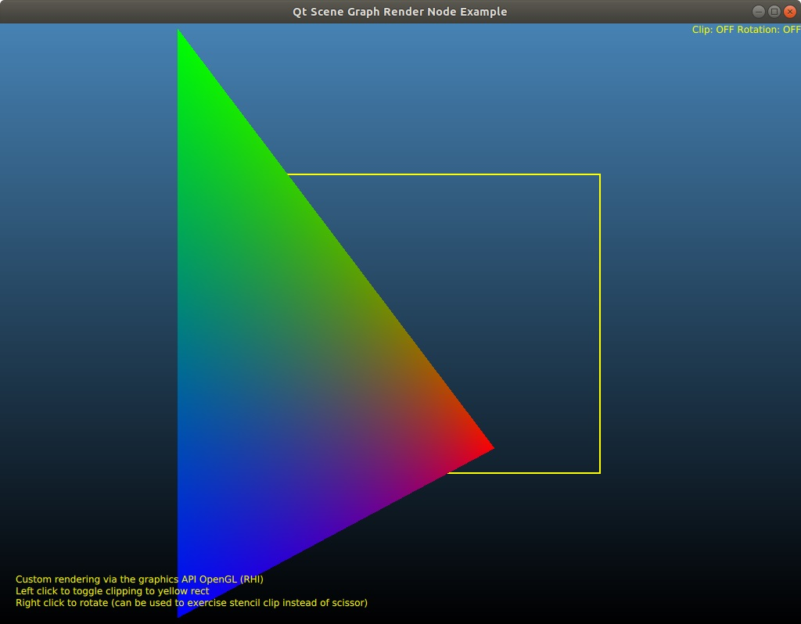

Scene Graph - Custom Rendering with QSGRenderNode
Shows how to integrate drawing via the native graphics API with the Qt Quick scene graph.

QSGRenderNode allows integrating draw and other calls made directly via the Qt Quick scene graph's underlying native graphics API (such as, Vulkan, Metal, Direct 3D, or OpenGL). This example demonstrates implementing a custom QQuickItem backed by a QSGRenderNode implementation, where the node renders a triangle directly via the graphics API. The rest of the scene (background, text, rectangles) are standard Qt Quick items. The example has full support for OpenGL and Metal, as well as the software backend of Qt Quick.
The custom item behaves like any other Qt Quick item, meaning it participates and stacking and clipping as usual, which is a big difference to the alternative approaches like having the custom rendering as an overlay (connecting to QQuickWindow::afterRendering()) and underlay (connecting to QQuickWindow::beforeRendering()) because those do not offer the possibility of proper mixing of the custom content with the Qt Quick scene.
Another important feature is that QSGRenderNode can be helpful to preserve performance, when compared to some of the alternatives. Going through QQuickFramebufferObject allows creating a custom item similarly to what this example does, but it does it by rendering the custom content in a texture, and then drawing a textured quad with that texture. This can be expensive on some systems due to the cost of texturing and blending. QSGRenderNode avoids this since the native graphics calls are issued in line with the draw calls for the scene graph's batches.
All this comes at the cost of being more complex, and not necessarily being suitable for all types of 3D content, in particular where vertices and different depth would clash with the 2D content in the Qt Quick scene graph's batches (those are better served by "flattening" into a 2D texture via approaches like QQuickFramebufferObject). Therefore QSGRenderNode is not always the right choice. It can however a good and powerful choice in many cases. This is what the example demonstrates.
Let's go through the most important parts of the code:
class CustomRenderItem : public QQuickItem { Q_OBJECT QML_ELEMENT public: CustomRenderItem(QQuickItem *parent = nullptr); QSGNode *updatePaintNode(QSGNode *node, UpdatePaintNodeData *) override; };
Our custom QML type is implemented in the class CustomRenderItem.
import SceneGraphRendering 2.0
The corresponding import in the QML document.
CustomRenderItem { id: renderer width: bg.width - 20 height: bg.height - 20 x: -clipper.x + 10 y: -clipper.y + 10 transform: [ Rotation { id: rotation; axis.x: 0; axis.z: 0; axis.y: 1; angle: 0; origin.x: renderer.width / 2; origin.y: renderer.height / 2; }, Translate { id: txOut; x: -renderer.width / 2; y: -renderer.height / 2 }, Scale { id: scale; }, Translate { id: txIn; x: renderer.width / 2; y: renderer.height / 2 } ] }
The CustomRenderItem object. It is positioned to fill a big part of the scene, covering its parent (the yellow rectangle; this will be used to demonstrate clipping). The item will have its scale and rotation animated.
Text { id: label anchors.bottom: parent.bottom anchors.left: parent.left anchors.margins: 20 color: "yellow" wrapMode: Text.WordWrap property int api: GraphicsInfo.api text: { var apiStr; switch (api) { case GraphicsInfo.OpenGL: apiStr = "OpenGL (direct)"; break; case GraphicsInfo.Direct3D12: apiStr = "Direct3D 12 (direct)"; break; case GraphicsInfo.Software: apiStr = "Software (QPainter)"; break; case GraphicsInfo.OpenGLRhi: apiStr = "OpenGL (RHI)"; break; case GraphicsInfo.MetalRhi: apiStr = "Metal (RHI)"; break; // the example has no other QSGRenderNode subclasses default: apiStr = "<UNSUPPORTED>"; break; } "Custom rendering via the graphics API " + apiStr + "\nLeft click to toggle clipping to yellow rect" + "\nRight click to rotate (can be used to exercise stencil clip instead of scissor)" }
Text items are used to show some helpful information, such as, the active graphics API Qt Quick uses.
MouseArea { anchors.fill: parent acceptedButtons: Qt.LeftButton | Qt.RightButton onClicked: (mouse) => { if (mouse.button === Qt.LeftButton) { clipper.clip = !clipper.clip } else if (mouse.button === Qt.RightButton) { nonRectClipAnim.running = !nonRectClipAnim.running if (!nonRectClipAnim.running) clipper.rotation = 0; } } }
Clicking the left mouse button is used to toggle clipping on the custom item's parent item. By default this is done using scissoring (GL_SCISSOR_TEST with OpenGL). A well-written QSGRenderNode implementation is expected to be able to take this into account and enable scissor testing when the scene graph indicates that it is necessary.
The right mouse button is used to toggle an animation on the rotation of the parent item. With clipping enabled, this demonstrates clipping via the stencil buffer since a rectangular scissor is not appropriate when we need to clip to a rotated rectangle shape. The scene graph fills up the stencil buffer as necessary, the QSGRenderNode implementation just has to enable stencil testing using the provided reference value.
CustomRenderItem::CustomRenderItem(QQuickItem *parent) : QQuickItem(parent) { // Our item shows something so set the flag. setFlag(ItemHasContents); }
Moving on to the CustomRenderItem implementation. This is a visual item.
QSGNode *CustomRenderItem::updatePaintNode(QSGNode *node, UpdatePaintNodeData *) { QSGRenderNode *n = static_cast<QSGRenderNode *>(node); QSGRendererInterface *ri = window()->rendererInterface(); if (!ri) return nullptr; switch (ri->graphicsApi()) { case QSGRendererInterface::OpenGL: Q_FALLTHROUGH(); case QSGRendererInterface::OpenGLRhi: #if QT_CONFIG(opengl) if (!n) n = new OpenGLRenderNode; static_cast<OpenGLRenderNode *>(n)->sync(this); #endif break; case QSGRendererInterface::MetalRhi: // Restore when QTBUG-78580 is done and the .pro is updated accordingly //#ifdef Q_OS_DARWIN #ifdef Q_OS_MACOS if (!n) { MetalRenderNode *metalNode = new MetalRenderNode; n = metalNode; metalNode->resourceBuilder()->setWindow(window()); QObject::connect(window(), &QQuickWindow::beforeRendering, metalNode->resourceBuilder(), &MetalRenderNodeResourceBuilder::build); } static_cast<MetalRenderNode *>(n)->sync(this); #endif break; case QSGRendererInterface::Direct3D12: // ### Qt 6: remove #if QT_CONFIG(d3d12) if (!n) n = new D3D12RenderNode; static_cast<D3D12RenderNode *>(n)->sync(this); #endif break; case QSGRendererInterface::Software: if (!n) n = new SoftwareRenderNode; static_cast<SoftwareRenderNode *>(n)->sync(this); break; default: break; } if (!n) qWarning("QSGRendererInterface reports unknown graphics API %d", ri->graphicsApi()); return n; }
The implementation of QQuickItem::updatePaintNode() creates (if not yet done) and returns an instance of a suitable QSGRenderNode subclass. The example supports multiple graphics APIs, and also the software backend.
Let's look at the the render node for OpenGL (supporting both the traditional, direct OpenGL-based scene graph, and also the modern, abstracted variant using the RHI). For other graphics APIs, the concepts and the outline of a QSGRenderNode implementation are the same. It is worth noting that in some cases it will also be necessary to connect to a signal like QQuickWindow::beforeRendering() to perform copy type of operations (such as, vertex buffer uploads). This is not necessary for OpenGL, but it is essential for Vulkan or Metal since there such operations cannot be issued in render() as there is a renderpass being recorded when render() is called.
class OpenGLRenderNode : public QSGRenderNode { public: ~OpenGLRenderNode(); void render(const RenderState *state) override; void releaseResources() override; StateFlags changedStates() const override; RenderingFlags flags() const override; QRectF rect() const override;
The main job is to provide implementations of the virtual QSGRenderNode functions.
OpenGLRenderNode::~OpenGLRenderNode() { releaseResources(); } void OpenGLRenderNode::releaseResources() { delete m_program; m_program = nullptr; delete m_vbo; m_vbo = nullptr; }
The pattern for safe graphics resource management is to do any cleanup in releaseResources(), while also calling this from the destructor.
void OpenGLRenderNode::render(const RenderState *state) { if (!m_program) init(); QOpenGLFunctions *f = QOpenGLContext::currentContext()->functions(); m_program->bind(); m_program->setUniformValue(m_matrixUniform, *state->projectionMatrix() * *matrix()); m_program->setUniformValue(m_opacityUniform, float(inheritedOpacity()));
The render() function initializes graphics resources (in this case, an OpenGL shader program and a vertex buffer), if not yet done. It then makes sure the necessary resources are bound and updates uniforms. The transformation matrix and the opacity are provided by the scene graph either via the state argument or base class functions.
QPointF p0(m_width - 1, m_height - 1);
QPointF p1(0, 0);
QPointF p2(0, m_height - 1);
GLfloat vertices[6] = { GLfloat(p0.x()), GLfloat(p0.y()),
GLfloat(p1.x()), GLfloat(p1.y()),
GLfloat(p2.x()), GLfloat(p2.y()) };
m_vbo->write(0, vertices, sizeof(vertices));
This render node is well-behaving since it basically renders in 2D, respecting the item's geometry. This is not mandatory, but then flags() has to return (or not return) the appropriate flags.
f->glColorMask(GL_TRUE, GL_TRUE, GL_TRUE, GL_TRUE); f->glEnable(GL_BLEND); f->glBlendFunc(GL_ONE, GL_ONE_MINUS_SRC_ALPHA); // Clip support. if (state->scissorEnabled()) { f->glEnable(GL_SCISSOR_TEST); const QRect r = state->scissorRect(); // already bottom-up f->glScissor(r.x(), r.y(), r.width(), r.height()); } if (state->stencilEnabled()) { f->glEnable(GL_STENCIL_TEST); f->glStencilFunc(GL_EQUAL, state->stencilValue(), 0xFF); f->glStencilOp(GL_KEEP, GL_KEEP, GL_KEEP); } f->glDrawArrays(GL_TRIANGLES, 0, 3);
After setting up vertex inputs, but before recording a draw call for our triangle, it is important to set some state in order to integrate with the rest of the scene correctly. Setting scissor and stencil as instructed by state allows our item to render correctly even when there are one or more clips in the parent chain.
QSGRenderNode::StateFlags OpenGLRenderNode::changedStates() const { return BlendState | ScissorState | StencilState; } QSGRenderNode::RenderingFlags OpenGLRenderNode::flags() const { return BoundedRectRendering | DepthAwareRendering; } QRectF OpenGLRenderNode::rect() const { return QRect(0, 0, m_width, m_height); }
As shown above, we only really render in 2D (no depth), within the item's geometry. changedStates() returns the flags corresponding to the OpenGL states render() touches.